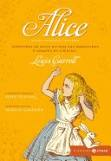
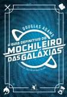

Harry Potter e a Ordem da Fênix

Sinopse
Parece impossível, mas, no bairro mais Muggle do mundo Muggle, Harry é emboscado por Dementors! Para salvar a sua vida e a do primo Dudley, Harry não tem outra hipótese senão usar magia - mesmo sabendo que isso significará a sua expulsão mais que certa de Hogwarts. Enquanto o Ministério da Magia continua a não acreditar que o terrível Senhor das Trevas está de volta, Voldemort e os seus fiéis Devoradores da Morte já começaram a preparar o seu regresso ao poder. Porém, há uma nova esperança: uma antiga ordem secreta, da qual os pais de Harry fizeram parte, voltou a organizar-se e Dumbledore está atento.
Fonte: Google Books
| Data |
Autor |
Idioma original |
Gêneros |
Número de Páginas |
Editora |
| 21 de junho de 2003 |
J.K. Rowling |
Inglês |
Romance, Ficção juvenil, Literatura fantástica |
704 |
Rocco |
O Senhor Dos Anéis: A Sociedade do Anel

Sinopse
A Sociedade do Anel O volume inicial de O Senhor dos Anéis, lançado originalmente em julho de 1954, foi o primeiro grande épico de fantasia moderno, conquistando milhões de leitores e se tornando o padrão de referência para todas as outras obras do gênero até hoje. A imaginação prodigiosa de J.R.R. Tolkien e seu conhecimento profundo das antigas mitologias da Europa permitiram que ele criasse um universo tão complexo e convincente quanto o mundo real. A Sociedade do Anel começa no Condado, a região rural do oeste da Terra-média onde vivem os diminutos e pacatos hobbits. Bilbo Bolseiro, um dos raros aventureiros desse povo, cujas peripécias foram contadas em O Hobbit, resolve ir embora do Condado e deixa sua considerável herança nas mãos de seu jovem parente Frodo. O mais importante lega...
Fonte: Google Books
| Data |
Autor |
Idioma original |
Gêneros |
Número de Páginas |
Editora |
| 29 de julho de 1954 |
J.R.R. Tolkien |
Inglês |
Literatura fantástica, Alta fantasia, Ficção de aventura, Romance de cavalaria, Fantasia heroica |
576 |
HarperCollins |
Percy Jackson e o Ladrão de Raios

Sinopse
The Lightning Thief é o primeiro livro da série Percy Jackson & os Olimpianos baseado na mitologia grega, escrito por Rick Riordan., que narra a vida do adolescente Percy Jackson que descobre ser um semideus, filho de Poseidon com uma humana.
Fonte: Google Books
| Data |
Autor |
Idioma original |
Gêneros |
Número de Páginas |
Editora |
| 28 de junho de 2005 |
Rick Riordan |
Inglês |
Romance, Mitologia grega, Fantasia, Literatura fantástica, Ficção juvenil, Alta fantasia |
400 |
Intrínseca |
Alice no Páis das Maravilhas

Sinopse
'Você poderia me dizer, por favor, qual caminho eu devo seguir a partir daqui?'
Que esta pergunta seja feita por uma garotinha perdida de casa (após ter seguido um coelho falante até sua toca) a uma espécie de gato fantasmagórico flutuante já não causa nenhuma estranheza quando chegamos na tal parte da história, pois como nos alertou a própria menina: 'há tanta coisa estranha acontecendo aqui que eu já não me surpreendo com mais nada'.
Com este conto surreal e fantástico, muitas vezes sem sentido algum, noutras vezes carregado de sentido oculto e profundo, Lewis Carroll revolucionou para sempre a literatura infantil, praticamente a refundando (não surpreende que encontremos algo do seu estilo em Antoine de Saint-Exupéry e Monteiro Lobato). É aqui que conheceremos céle...
Fonte: Google Books
| Data |
Autor |
Idioma original |
Gêneros |
Número de Páginas |
Editora |
| novembro de 1865 |
Lewis Carroll |
Inglês |
Literatura infantil, Literatura fantástica, Ficção Absurdista, Fantástico |
415 |
Zahar |
O Guia Definitivo do Mochileiro Das Galáxias

Sinopse
Com mais de 15 milhões de exemplares vendidos, a saga de Arthur Dent pela Galáxia conquistou fãs pelo mundo inteiro. O humor ácido e as tramas surreais de Douglas Adams se tornaram ícones de uma geração e seguem fascinando leitores de todas as idades. Reunindo todos os livros da série em uma edição de luxo, O Guia Definitivo do Mochileiro das Galáxias vai levar você por aventuras improváveis. Pegue sua toalha, divirta-se e não entre em pânico!
O Guia do Mochileiro das Galáxias – Segundos antes de a Terra ser destruída, Arthur Dent é salvo por Ford Prefect, um E.T. que fazia pesquisa para a nova edição de O...
Fonte: Google Books
| Data |
Autor |
Idioma original |
Gêneros |
Número de Páginas |
Editora |
| 12 de outubro de 1979 |
Douglas Adams |
Inglês |
Ficção científica, Romance, Humor, Ficção humorística, Ficção científica cômica |
784 |
Arqueiro |